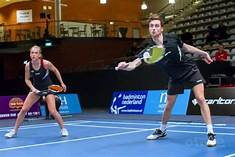
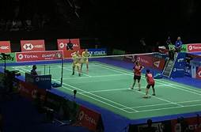

 De Wereldkampioensschappen badminton is een toernooi dat jaarlijks gespeeld word. Het WK badminton wordt georganiseerd door de Badminton World Federation. De Wereldkampioensschappen werden voor het eerst georganiseerd in 1977 in Malmo. Dit jaar is het WK badminton voor de 45e keer georganiseerd. Het was van 12 december t/m 17 december. In 1977 werd het nog om de 3 jaar georganiseerd maar toen is in 1983 besloten het om de 2 jaar te organiseren en in 2006 is besloten het ieder jaar te organiseren met uitzondering op de jaren van de olympische spelen.
 Het laatste Wk badminton is georganiseerd in Bazel wat ligt in Zwitserland. Er zijn nog geen Nederlanders geweest die het WK gewonnen hebben. De laatste die goud gehaald hebben in de herendubbel hebben zijn Mohammad Ahsan en Hendra Setiawan uit Indonesie. Mayu Matsumoto en Wakana Nagahara uit Japan hebben samen goud gehaald bij de vrouwendubbe. In de gemengd dubbel hebben Zheng Si Wei en Huang Ya Qiong uit China goud gewonnen.
Bij de herenenkel heeft Kento Momota als laatste goud gewonnen bij de Wereldkampioensschappen badminton. Hij komt uit Japan en is geboren op 1 september 1994 en is nu 27 jaar oud. Kento Momota heeft veel grote toernooien gewonnen en hij is zelfs in het Guinness Book of World Records gekomen voor de meest gewonnen titles in de mannenenkel. Hij had in 2019 maar liefst 11 titels op zijn naam staan. In 2011 won hij zijn eerste grote toernooi dat was de World Junior Championship. Dat was het begin van zijn carriere en vanaf dat moment is hij veel meer gan winnen.
Pusurla Venkata Sindhu heeft als laatste goud gewonnen bij de wereldkampioensschappen bamdinton. Ze komt uit India en is geboren 5 juli 1995 en is nu 26 jaar oud. Ze komt uit een familie vol met volleyballers. Bij de Wereldkampioensschappen van 2013 en 2014 haalde ze brons en in 2017 en 2018 haalde ze zilver. Ze heeft in 2016 meegedaan aan de Olympische Spelen en werd toen de eertse Indiaanse vrouw die een medaille gehaald heeft op de Olympische Spelen. Ze stond in de finale maar verloor en kreeg zilver.